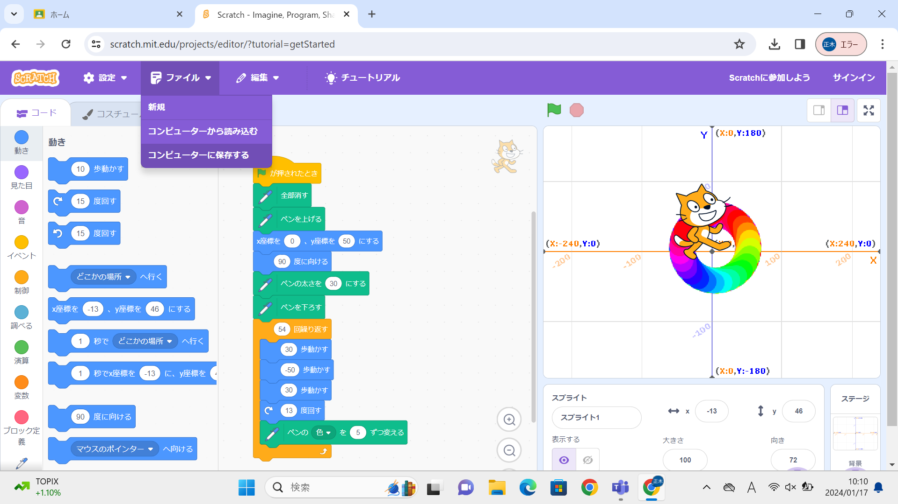

1-1 サイエンスアート

1.内容
スクラッチを使って線を書くプログラムを作成した。このプログラムは、原点を中心とし太い円を二回描くようになっている。
画像の通り、30歩動いて－50歩動いた後に再び30歩動く。そして13度回す。この動作を54回繰り返すのブロックの間に入れることによって
この大きさの円を二回描くように なっている。文字の太さは30、色は五色ずつ変化するようになっている。
2.感想
数値が1変化するだけで、プログラムにかなり変化が起きると分かった。自分でどのように動かすかなどの目標を立て、それを実現するために試行錯誤
することが楽しかった。